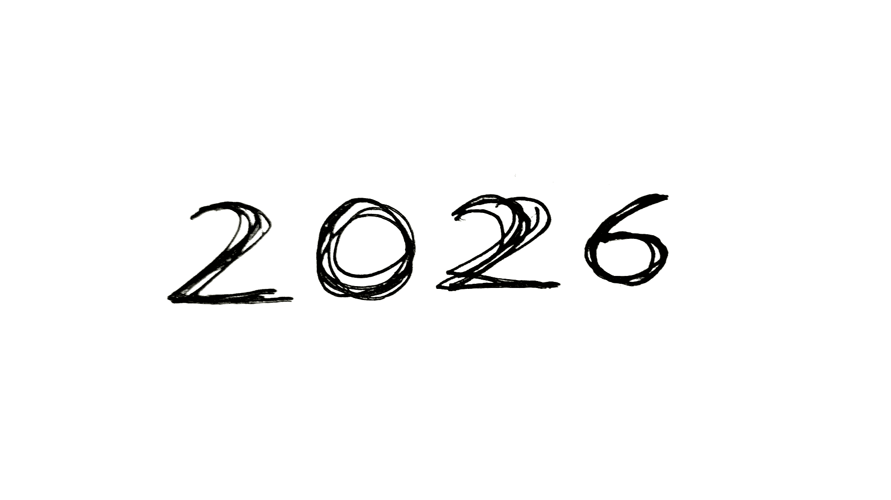

Итоги 2025
Вроде бы схлынул накал страстей по Венесуэле, и наконец можно оглянуться назад на прошедший год. К тому же, у меня кончился отпуск, и меня уже кружит водоворот новых страстей. Так что погнали подводить итоги 2025 года.
Как будто бы важность событий в этом году шла по нарастающей:
🦎 В марте сгоняли в джунгли, в Икитос. Это был наш первый раз в джунглях и опыт был запоминающимся. Но своеобразный, на любителя 😄
🪪 Потом была учёба и получение перуанских прав. Положили на это пару месяцев и тучу нервных клеток! Зато теперь не бесправные 🎉
🚘 Параллельно с правами пытались понять какую машину купить. Учитывая что это первая собственная машина в жизни, нужно было разобраться и изучить вопрос, чтобы принять правильное решение.
И считаем, что не прогадали.
Во-первых, хорошо что взяли автомат (точнее, вариатор). Это сильно повышает комфорт.
Во-вторых, новая машина с салона - тоже правильное решение. Голова вообще не болит насчёт того что что-то может сломаться. А если и сломается - дилер починит по гарантии. Меньше переживаний в эти и без того тревожные времена - несомненный плюс!
Ну и в-третьих, выбор модели отличный. Toyota Raize - машинка достаточно маленькая чтобы пролазить по узким запаркованным улочкам Куско и окрестностей, но при этом достаточно вместительная чтобы возить всякое и достаточно высокая, чтобы не переживать насчёт ям и лежачих полицейских, коих тут в избытке. Ну и продуманная, комфортная и надёжная.
В целом наличие машины - это свобода перемещений и новые возможности. И мы уже эксплуатируем их по полной: уже и загружали салон вещами под потолок, и перевозили 8 человек одновременно 🤪
Но это не предел: я тут видел как из Kia Picanto вылезли 12 человек! Но то были перуанцы, они поменьше. Не уверен со сможем побить этот рекорд 😁
😎 И была ещё парочка больших достижений под занавес года, но про них расскажу только когда будут результаты. А они будут уже в 2026 году.
🦉 Ну и последнее - в первые дни года я решил завязывать с Дуолинго. Зелёная сова начала пихать мне одни и те же уроки, которые я давно проходил, как будто откатила меня назад. Стало просто скучно, ничего нового не узнаю. Да и незачем как будто, т.к. от живого общения с перуанцами впитываешь гораздо больше живого языка.
Так что сове пора на глубус. Дальше я как-нибудь сам. Но стоит сказать ей спасибо. Всё-таки 1145 дней занятий каждый день без перерыва научили меня испанскому.
Что ещё сказать? Ура, товарищи! 🎄
 3 года 1 месяц и 19 дней без перерыва!
3 года 1 месяц и 19 дней без перерыва!